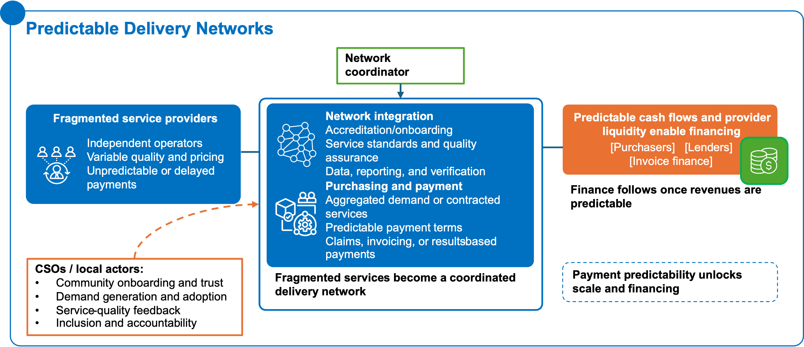
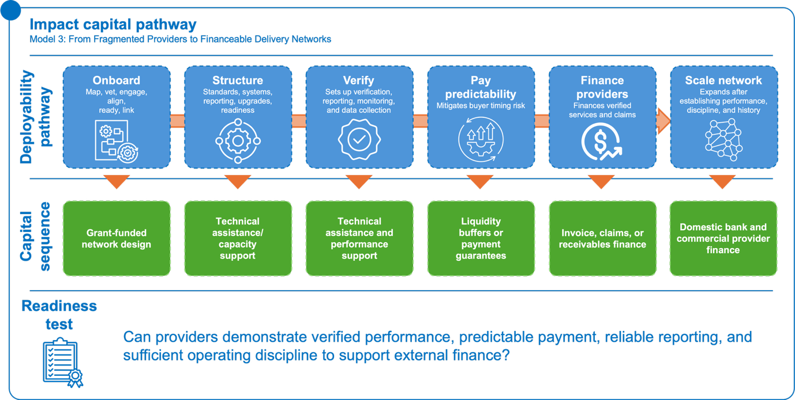
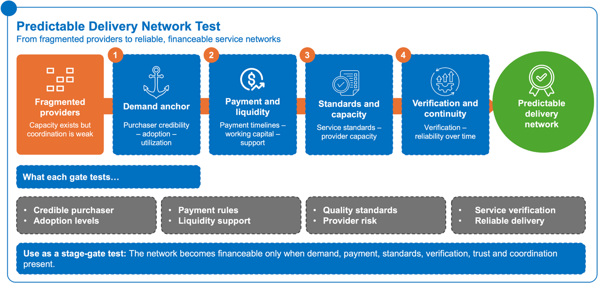
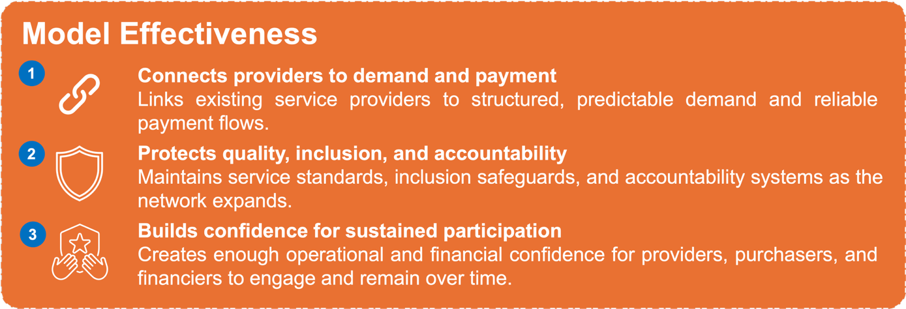
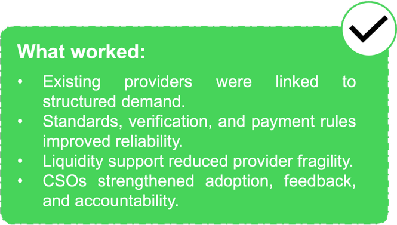
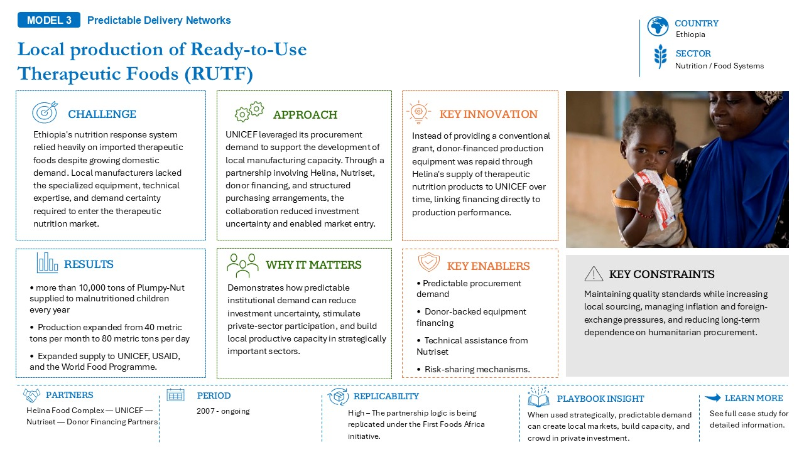

10.1 What problem the model solves

Figure 19: From fragmentation to reliability: integrating providers, standards, verification, and payment into predictable delivery networks.Figure 19: From fragmentation to reliability: integrating providers, standards, verification, and payment into predictable delivery networks.Predictable Delivery Networks address situations where service capacity already exists, but remains fragmented, weakly coordinated, or difficult to finance because demand, standards, verification, and payment are not sufficiently structured.
In many sectors, CSOs, local providers, SMEs, private firms, public agencies, and community-facing organizations are already delivering important services. Clinics provide care, pharmacies distribute medicines, extension agents support farmers, energy service companies maintain distributed assets, and logistics providers move goods across difficult markets. The problem is not always the absence of service providers. The problem is that these providers often operate in disconnected systems with uncertain payment, variable standards, weak visibility, and limited access to working capital.
This model converts fragmented service capacity and existing delivery activity into coordinated, scalable, and sustainable delivery networks. It does this by linking providers to clearer demand, common standards, verification mechanisms, payment rules, and, where needed, liquidity or working-capital support.
The purpose is not to over-formalize every local delivery relationship. It is to create enough structure for service providers to become more reliable partners, and for purchasers, funders, lenders, or public actors to engage with confidence.
10.2 Where it applies
This model is most relevant where delivery actors already exist but are not yet integrated into a reliable system of demand, standards, verification, and payment. It is especially useful in service-heavy markets where scale depends less on a single asset or project and more on coordinating many providers over time.
Health
This model can apply to clinics, pharmacies, diagnostic providers, digital health platforms, provider integration systems, and other health-service networks.
In health, fragmented providers may already serve significant demand, but lack predictable reimbursement, common quality standards, claims discipline, or access to working capital. A predictable delivery network can help integrate providers into more structured purchasing, accreditation, reporting, and payment arrangements.
This can support service continuity, quality assurance, provider financing, and wider access without assuming that all delivery must be public or centrally operated.
Agriculture
This model can apply to extension services, mechanization providers, veterinary services, input distribution, fortification, aggregation agents, and other farmer-facing or value-chain services.
In agriculture, service provision often depends on dispersed actors operating across fragmented geographies and seasonal demand cycles. Farmers may need inputs, advisory, mechanization, veterinary support, storage, or market access, but providers may struggle to scale where demand is uncertain, payment is irregular, and service standards vary.
A predictable delivery network can help organize providers around clearer service obligations, demand aggregation, performance expectations, and payment or financing mechanisms.
Energy
This model can apply to distributed energy service companies, clean cooking providers, maintenance networks, solar irrigation operators, appliance-service providers, and other decentralized energy-service models.
In energy, the challenge is often not only asset deployment, but sustained use, maintenance, payment, and service continuity. Distributed energy models can scale when customers, providers, financiers, and public or donor programs have confidence that services will be delivered, monitored, paid for, and maintained over time.
Predictable delivery networks can help turn decentralized energy providers into more reliable service systems.
Logistics
This model can apply to cold chain, warehousing, last-mile delivery, rural distribution, health commodity logistics, and food-system logistics.
In logistics, delivery reliability depends on coordination across multiple actors, routes, assets, and service points. Where service standards, delivery schedules, payment arrangements, and accountability are unclear, providers may remain sub-scale or unreliable.
A predictable delivery network can create a more structured basis for service contracts, performance monitoring, working capital, and expansion.
10.3 Transaction mechanics
Predictable Delivery Networks work by organizing service providers around clearer rules of participation, delivery, verification, payment, and accountability.
Typical mechanics include:
- Accreditation or onboarding to define which providers can participate and under what conditions;
- Service-level agreements that clarify expected services, quality standards, reporting obligations, and performance requirements;
- Demand aggregation through public purchasers, anchor buyers, platforms, insurers, aggregators, or program sponsors;
- Payment rules that define who pays, when payment is made, what triggers payment, and how delays are handled;
- Invoice, claims, or service verification to confirm that services were delivered according to agreed standards;
- Working-capital support to help providers manage the gap between service delivery and payment;
- Liquidity buffers to reduce disruption from payment delays or seasonal revenue cycles;
- Data reporting and feedback systems that allow purchasers, providers, CSOs, and financiers to monitor service continuity, quality, and accountability.
The model works best when payment predictability and service accountability are designed together. Payment without quality standards can weaken trust. Standards without reliable payment can weaken provider participation. Verification without liquidity support can still leave providers unable to scale.
A predictable network requires enough structure to create confidence, but enough flexibility to accommodate local delivery realities.
10.4 Impact Capital Pathway: From Fragmented Providers to Financeable Delivery Networks
Predictable delivery networks require capital to move in stages as fragmented providers become more standardized, verifiable, and financeable. Early grant funding supports network design, provider mapping, accreditation frameworks, community engagement, service standards, and purchaser readiness. Technical assistance and capacity support help providers meet quality requirements, reporting expectations, verification rules, and operational standards.
As providers become more structured, working-capital facilities can help bridge timing gaps between service delivery and payment. Liquidity buffers or payment guarantees may then be used where purchaser credibility exists but payment timing remains uncertain. Once services are consistently verified and payment performance becomes predictable, providers may access invoice, claims, or receivables finance. Domestic bank finance and commercial lending become appropriate when provider performance, purchaser discipline, and receivables data are sufficiently reliable.
The key financing question is not whether providers exist. It is whether provider performance, verification, reimbursement, and payment systems have become predictable enough to support sustainable financing and network growth.

Key indicators to track include:
- providers accredited or onboarded;
- providers meeting service standards;
- payment timeline adherence;
- claims or invoice approval rate;
- provider working-capital gap reduced;
- service continuity, uptime, or stock availability;
- user adoption and retention;
- domestic finance participation;
- reduction in service interruptions caused by delayed payments.
Risks to test include:
For detailed examples of predictable delivery network models in practice, see the Case Study Compendium.10.5 CSO and institutional actor lens
CSO role
CSOs and community-facing organizations can play a central role in making delivery networks legitimate, inclusive, and responsive to user needs.
They can help:
- support community onboarding and awareness;
- strengthen trust between providers, users, purchasers, and public actors;
- validate whether services respond to real demand and adoption patterns;
- identify barriers to access, affordability, quality, or continuity;
- support demand generation where services are useful but underutilized;
- provide service-quality feedback and help surface delivery failures early;
- support grievance channels and accountability mechanisms;
- monitor whether underserved groups are included as the network scales;
- help protect the legitimacy of the model as private or institutional participation increases.
In this model, CSOs are not simply outreach partners. They help make service networks more trustworthy, responsive, and durable.
Institutional actor role
Institutional actors should clarify whether their role is to strengthen the purchaser, finance providers, set standards, coordinate the network, or support the systems that make the network viable.
Their role may include:
- funding or designing accreditation systems;
- supporting purchaser capacity or reimbursement discipline;
- providing working capital, guarantees, or liquidity facilities;
- setting or harmonizing service standards;
- coordinating providers across geographies or service lines;
- supporting verification and accountability arrangements;
- financing provider upgrades, equipment, or digital systems;
- aligning public, philanthropic, and private actors around the same delivery network.
10.6 Bankability test and failure modes
Predictable Delivery Networks are more likely to become financeable and scalable when service providers, purchasers, users, and financiers have confidence in the network’s demand, standards, payment, and accountability arrangements.
Bankability test
Key questions include:
- Purchaser credibility: Is there a credible public, quasi-public, donor, insurer, platform, anchor buyer, or commercial purchaser behind demand?
- Adoption and utilization: Are users adopting the service at levels that support operational sustainability?
- Payment timelines: Are payment rules clear, reliable, and aligned with provider working-capital needs?
- Service standards: Are quality, reporting, and performance expectations clear enough for providers and purchasers?
- Verification arrangements: Is there a credible way to confirm that services were delivered as agreed?
- Provider capacity: Can providers meet expected standards without taking on unsustainable operational or financial risk?
- Liquidity support: Are providers protected from payment delays, seasonality, or working-capital gaps that could disrupt delivery?
- Continuity and reliability: Is there enough confidence that the service can be delivered consistently over time?
- Accountability and trust: Are users able to raise issues, provide feedback, and see problems addressed?
- Figure 20: From fragmentation to reliability: pressure‑testing demand, payments, standards, and verification to build delivery networks that capital can trust.Figure 20: From fragmentation to reliability: pressure‑testing demand, payments, standards, and verification to build delivery networks that capital can trust.Network coordination: Is there a clear actor responsible for maintaining alignment between providers, purchasers, funders, and users?

Common failure modes
| Failure condition | What it means in practice |
|---|---|
| Unstructured demand | Demand is assumed to exist but is not aggregated, contracted, or translated into predictable purchasing commitments. |
| Weak purchaser credibility | Purchasers lack the financial strength, discipline, or systems to make timely and reliable payments. |
| Unsupported provider accreditation | Providers are onboarded or accredited without the operational, financial, or technical support needed to meet required standards. |
| Misaligned service standards | Standards are either too rigid for local realities (limiting participation) or too vague to ensure accountability and quality. |
| Burdensome verification systems | Verification processes increase reporting requirements without improving trust, payment reliability, or performance visibility. |
| Provider liquidity constraints | Service providers carry working-capital risk without access to financing or liquidity support to sustain operations. |
| Limited CSO integration | CSOs are engaged only for outreach rather than contributing to design, feedback loops, accountability, and adoption. |
| Late identification of adoption barriers | Barriers to uptake (affordability, trust, access) are recognized too late, affecting utilization and viability. |
| Payment delays | Delayed payments undermine provider confidence, disrupt service continuity, and weaken the network over time. |
| Lack of network coordination | No single actor is responsible for managing, coordinating, and sustaining the network over time. |
Closing logic
Predictable Delivery Networks are useful when the problem is not a lack of providers, but a lack of structure around how services are purchased, delivered, verified, paid for, and trusted.

For CSOs and development actors, the model creates a way to preserve community relationships, trust, and accountability while supporting more sustainable service delivery. For institutional actors and financiers, the model creates a basis for engaging with fragmented providers through clearer demand, standards, performance expectations, and payment logic.
10.7 Illustrative case

In practice, predictable delivery networks become most effective when recurring demand, payment visibility, and service coordination create enough confidence for providers to invest in long-term delivery capacity. Across health, agriculture, and decentralized energy systems, these structures have increasingly helped transform fragmented service activity into more reliable and scalable delivery ecosystems.

The local production of Ready-to-Use Therapeutic Foods (RUTF) in Ethiopia shows how predictable procurement can convert humanitarian demand into domestic production capacity. By using UNICEF’s procurement demand, donor-backed equipment financing, technical assistance from Nutriset, and risk-sharing mechanisms, the model helped local manufacturers enter a highly specialized nutrition market that had previously depended heavily on imports. The approach expanded production from 40 metric tons per month to 80 metric tons per day and supplied more than 10,000 tons of Plumpy-Nut to malnourished children each year, while demonstrating that predictable demand can reduce investment uncertainty, support local capacity, and crowd in private-sector participation.